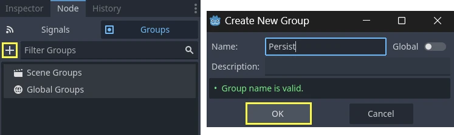

Lưu game
Giới thiệu
Việc lưu game có thể khá phức tạp. Ví dụ, bạn có thể muốn lưu thông tin từ nhiều đối tượng trên nhiều màn chơi. Các hệ thống lưu game nâng cao nên cho phép lưu thêm thông tin về một số lượng đối tượng bất kỳ. Điều này giúp hàm lưu có thể mở rộng khi game ngày càng phức tạp.
Ghi chú
Nếu bạn muốn lưu cấu hình của người dùng, bạn có thể dùng lớp class_ConfigFile cho mục đích này.
Xem thêm
Bạn có thể xem cách lưu và tải hoạt động trong thực tế qua dự án demo Saving and Loading (Serialization).
Xác định các đối tượng cần lưu giữ
Trước tiên, chúng ta cần xác định những đối tượng nào muốn giữ lại giữa các phiên chơi và những thông tin nào muốn giữ từ các đối tượng đó. Trong bài hướng dẫn này, chúng ta sẽ dùng group để đánh dấu và xử lý các đối tượng cần lưu, nhưng tất nhiên vẫn có những cách khác.
Chúng ta sẽ bắt đầu bằng cách thêm các đối tượng muốn lưu vào group "Persist". Có thể làm việc này qua GUI hoặc bằng script. Hãy thêm các node liên quan bằng GUI:

Sau khi làm xong, khi cần lưu game, chúng ta có thể lấy tất cả các đối tượng cần lưu rồi yêu cầu tất cả chúng tự lưu bằng script sau:
var save_nodes = get_tree().get_nodes_in_group("Persist")
for node in save_nodes:
# Now, we can call our save function on each node.
var saveNodes = GetTree().GetNodesInGroup("Persist");
foreach (Node saveNode in saveNodes)
{
// Now, we can call our save function on each node.
}
Tuần tự hóa (serialization)
Bước tiếp theo là tuần tự hóa dữ liệu. Việc này giúp đọc và lưu dữ liệu xuống ổ đĩa dễ dàng hơn nhiều. Trong trường hợp này, chúng ta giả định mỗi thành viên của group Persist là một node đã được tạo instance và do đó có một đường dẫn. GDScript có lớp hỗ trợ JSON để chuyển đổi giữa dictionary và chuỗi. Node của chúng ta cần có một hàm save trả về dữ liệu này. Hàm save sẽ trông như sau:
func save():
var save_dict = {
"filename" : get_scene_file_path(),
"parent" : get_parent().get_path(),
"pos_x" : position.x, # Vector2 is not supported by JSON
"pos_y" : position.y,
"attack" : attack,
"defense" : defense,
"current_health" : current_health,
"max_health" : max_health,
"damage" : damage,
"regen" : regen,
"experience" : experience,
"tnl" : tnl,
"level" : level,
"attack_growth" : attack_growth,
"defense_growth" : defense_growth,
"health_growth" : health_growth,
"is_alive" : is_alive,
"last_attack" : last_attack
}
return save_dict
public Godot.Collections.Dictionary<string, Variant> Save()
{
return new Godot.Collections.Dictionary<string, Variant>()
{
{ "Filename", SceneFilePath },
{ "Parent", GetParent().GetPath() },
{ "PosX", Position.X }, // Vector2 is not supported by JSON
{ "PosY", Position.Y },
{ "Attack", Attack },
{ "Defense", Defense },
{ "CurrentHealth", CurrentHealth },
{ "MaxHealth", MaxHealth },
{ "Damage", Damage },
{ "Regen", Regen },
{ "Experience", Experience },
{ "Tnl", Tnl },
{ "Level", Level },
{ "AttackGrowth", AttackGrowth },
{ "DefenseGrowth", DefenseGrowth },
{ "HealthGrowth", HealthGrowth },
{ "IsAlive", IsAlive },
{ "LastAttack", LastAttack }
};
}
Hàm này cho chúng ta một dictionary có dạng { "variable_name":value_of_variable }, sẽ hữu ích khi tải.
Lưu và đọc dữ liệu
Như đã trình bày trong bài hướng dẫn Hệ thống tệp, chúng ta cần mở một file để có thể ghi vào hoặc đọc từ nó. Giờ đã có cách gọi các group và lấy dữ liệu liên quan, hãy dùng lớp JSON để chuyển nó thành một chuỗi dễ lưu trữ và lưu vào file. Làm theo cách này đảm bảo mỗi dòng là một đối tượng riêng, nên chúng ta cũng có cách dễ dàng để lấy dữ liệu ra khỏi file.
# Note: This can be called from anywhere inside the tree. This function is
# path independent.
# Go through everything in the persist category and ask them to return a
# dict of relevant variables.
func save_game():
var save_file = FileAccess.open("user://savegame.save", FileAccess.WRITE)
var save_nodes = get_tree().get_nodes_in_group("Persist")
for node in save_nodes:
# Check the node is an instanced scene so it can be instanced again during load.
if node.scene_file_path.is_empty():
print("persistent node '%s' is not an instanced scene, skipped" % node.name)
continue
# Check the node has a save function.
if !node.has_method("save"):
print("persistent node '%s' is missing a save() function, skipped" % node.name)
continue
# Call the node's save function.
var node_data = node.call("save")
# JSON provides a static method to serialized JSON string.
var json_string = JSON.stringify(node_data)
# Store the save dictionary as a new line in the save file.
save_file.store_line(json_string)
// Note: This can be called from anywhere inside the tree. This function is
// path independent.
// Go through everything in the persist category and ask them to return a
// dict of relevant variables.
public void SaveGame()
{
using var saveFile = FileAccess.Open("user://savegame.save", FileAccess.ModeFlags.Write);
var saveNodes = GetTree().GetNodesInGroup("Persist");
foreach (Node saveNode in saveNodes)
{
// Check the node is an instanced scene so it can be instanced again during load.
if (string.IsNullOrEmpty(saveNode.SceneFilePath))
{
GD.Print($"persistent node '{saveNode.Name}' is not an instanced scene, skipped");
continue;
}
// Check the node has a save function.
if (!saveNode.HasMethod("Save"))
{
GD.Print($"persistent node '{saveNode.Name}' is missing a Save() function, skipped");
continue;
}
// Call the node's save function.
var nodeData = saveNode.Call("Save");
// Json provides a static method to serialized JSON string.
var jsonString = Json.Stringify(nodeData);
// Store the save dictionary as a new line in the save file.
saveFile.StoreLine(jsonString);
}
}
Đã lưu game! Bây giờ, để tải, chúng ta sẽ đọc từng dòng. Dùng phương thức parse để đọc chuỗi JSON trở lại thành dictionary, rồi duyệt qua dict để đọc các giá trị. Nhưng trước tiên chúng ta cần tạo đối tượng, và có thể dùng các giá trị filename và parent để làm việc đó. Đây là hàm load của chúng ta:
# Note: This can be called from anywhere inside the tree. This function
# is path independent.
func load_game():
if not FileAccess.file_exists("user://savegame.save"):
return # Error! We don't have a save to load.
# We need to revert the game state so we're not cloning objects
# during loading. This will vary wildly depending on the needs of a
# project, so take care with this step.
# For our example, we will accomplish this by deleting saveable objects.
var save_nodes = get_tree().get_nodes_in_group("Persist")
for i in save_nodes:
i.queue_free()
# Load the file line by line and process that dictionary to restore
# the object it represents.
var save_file = FileAccess.open("user://savegame.save", FileAccess.READ)
while save_file.get_position() < save_file.get_length():
var json_string = save_file.get_line()
# Creates the helper class to interact with JSON.
var json = JSON.new()
# Check if there is any error while parsing the JSON string, skip in case of failure.
var parse_result = json.parse(json_string)
if not parse_result == OK:
print("JSON Parse Error: ", json.get_error_message(), " in ", json_string, " at line ", json.get_error_line())
continue
# Get the data from the JSON object.
var node_data = json.data
# Firstly, we need to create the object and add it to the tree and set its position.
var new_object = load(node_data["filename"]).instantiate()
get_node(node_data["parent"]).add_child(new_object)
new_object.position = Vector2(node_data["pos_x"], node_data["pos_y"])
# Now we set the remaining variables.
for i in node_data.keys():
if i == "filename" or i == "parent" or i == "pos_x" or i == "pos_y":
continue
new_object.set(i, node_data[i])
// Note: This can be called from anywhere inside the tree. This function is
// path independent.
public void LoadGame()
{
if (!FileAccess.FileExists("user://savegame.save"))
{
return; // Error! We don't have a save to load.
}
// We need to revert the game state so we're not cloning objects during loading.
// This will vary wildly depending on the needs of a project, so take care with
// this step.
// For our example, we will accomplish this by deleting saveable objects.
var saveNodes = GetTree().GetNodesInGroup("Persist");
foreach (Node saveNode in saveNodes)
{
saveNode.QueueFree();
}
// Load the file line by line and process that dictionary to restore the object
// it represents.
using var saveFile = FileAccess.Open("user://savegame.save", FileAccess.ModeFlags.Read);
while (saveFile.GetPosition() < saveFile.GetLength())
{
var jsonString = saveFile.GetLine();
// Creates the helper class to interact with JSON.
var json = new Json();
var parseResult = json.Parse(jsonString);
if (parseResult != Error.Ok)
{
GD.Print($"JSON Parse Error: {json.GetErrorMessage()} in {jsonString} at line {json.GetErrorLine()}");
continue;
}
// Get the data from the JSON object.
var nodeData = new Godot.Collections.Dictionary<string, Variant>((Godot.Collections.Dictionary)json.Data);
// Firstly, we need to create the object and add it to the tree and set its position.
var newObjectScene = GD.Load<PackedScene>(nodeData["Filename"].ToString());
var newObject = newObjectScene.Instantiate<Node>();
GetNode(nodeData["Parent"].ToString()).AddChild(newObject);
newObject.Set(Node2D.PropertyName.Position, new Vector2((float)nodeData["PosX"], (float)nodeData["PosY"]));
// Now we set the remaining variables.
foreach (var (key, value) in nodeData)
{
if (key == "Filename" || key == "Parent" || key == "PosX" || key == "PosY")
{
continue;
}
newObject.Set(key, value);
}
}
}
Giờ chúng ta có thể lưu và tải một số lượng đối tượng bất kỳ được bố trí gần như ở bất cứ đâu trong scene tree! Mỗi đối tượng có thể lưu dữ liệu khác nhau tùy theo những gì nó cần lưu.
Một vài lưu ý
Chúng ta đã lướt qua phần thiết lập trạng thái game để tải. Rốt cuộc, việc đặt phần lớn logic này ở đâu là tùy người tạo dự án. Việc này thường phức tạp và cần được tùy chỉnh nhiều dựa trên nhu cầu của từng dự án.
Ngoài ra, cách triển khai của chúng ta giả định không có đối tượng Persist nào là con của đối tượng Persist khác. Nếu không, các đường dẫn không hợp lệ sẽ được tạo ra. Để hỗ trợ các đối tượng Persist lồng nhau, hãy cân nhắc lưu đối tượng theo từng giai đoạn. Tải các đối tượng cha trước để chúng sẵn sàng cho lời gọi add_child() khi các đối tượng con được tải. Bạn cũng cần một cách để liên kết con với cha vì NodePath nhiều khả năng sẽ không còn hợp lệ.
JSON và tuần tự hóa nhị phân
Với trạng thái game đơn giản, JSON có thể đáp ứng được và nó tạo ra các file mà con người đọc được, dễ debug.
Nhưng JSON có nhiều hạn chế. Nếu bạn cần lưu trạng thái game phức tạp hơn hoặc với khối lượng lớn, tuần tự hóa nhị phân có thể là cách tiếp cận tốt hơn.
Hạn chế của JSON
Dưới đây là một số điểm dễ mắc lỗi quan trọng cần biết khi dùng JSON.
Kích thước file: JSON lưu dữ liệu ở định dạng văn bản, lớn hơn nhiều so với các định dạng nhị phân.
Kiểu dữ liệu: JSON chỉ cung cấp một tập kiểu dữ liệu hạn chế. Nếu bạn có các kiểu dữ liệu mà JSON không có, bạn sẽ cần chuyển đổi dữ liệu qua lại với các kiểu mà JSON xử lý được. Ví dụ, một số kiểu quan trọng mà JSON không thể phân tích là:
Vector2,Vector3,Color,Rect2vàQuaternion.Cần logic tùy chỉnh để mã hóa/giải mã: Nếu bạn có lớp tùy chỉnh nào muốn lưu bằng JSON, bạn sẽ cần tự viết logic mã hóa và giải mã cho các lớp đó.
Tuần tự hóa nhị phân
Tuần tự hóa nhị phân là một cách tiếp cận khác để lưu trạng thái game, và bạn có thể dùng nó với các hàm get_var và store_var của class_FileAccess.
Tuần tự hóa nhị phân thường tạo ra file nhỏ hơn JSON.
Tuần tự hóa nhị phân có thể xử lý hầu hết các kiểu dữ liệu phổ biến.
Tuần tự hóa nhị phân cần ít logic tùy chỉnh hơn để mã hóa và giải mã các lớp tùy chỉnh.
Lưu ý rằng không phải tất cả thuộc tính đều được đưa vào. Chỉ những thuộc tính được cấu hình với cờ PROPERTY_USAGE_STORAGE mới được tuần tự hóa. Bạn có thể thêm một cờ usage mới cho thuộc tính bằng cách ghi đè phương thức _get_property_list trong lớp của mình. Bạn cũng có thể kiểm tra cách cấu hình usage của thuộc tính bằng cách gọi Object._get_property_list. Xem PropertyUsageFlags để biết các cờ usage có thể dùng.